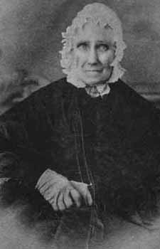
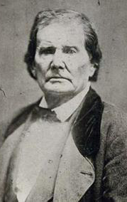
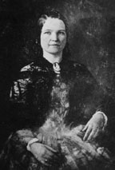
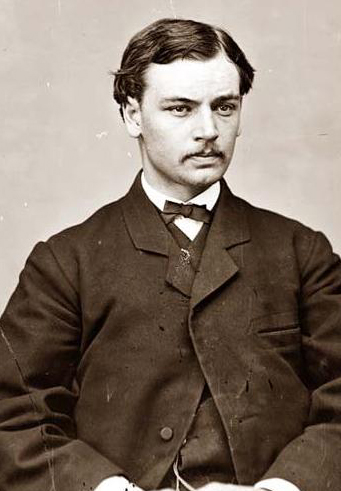
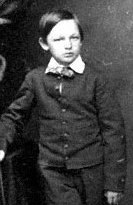

|
|

Sarah Lincoln
|
Sarah 'Sally' Bush Lincoln (1788 - 1869): When Abraham was ten,
his mother died during an epidemic of what was known on the
prairie as "milk sick". His father Thomas married Sally, a
widow with three children, the next year. Though she was ten
years younger than he, they had known each other for more
than ten years. She brought three children with her,
bringing the total number of people living in the Lincolns'
small one-room cabin to seven. Not surprisingly, they moved
into a larger cabin soon thereafter.
Abraham became very attached to his stepmother. She
insisted that he get as much education as possible. by
attending school when he could and by reading books when he
could not. Sally appreciated Abraham's special gifts even
though his father sometimes did not. Though he eventually
became estranged from Thomas, Abraham kept in close contact
with his stepmother. Among the last things he did before
leaving his home in Springfield for the White House was pay
a visit to Sally in her home in Farmington, Illinois. They
spent their last day together, holding hands and recalling
old memories. Later, Lincoln said "All I ever was, all I can
ever hope to be, I owe to her."
|

Thomas Lincoln
|
Thomas Lincoln (1778 - 1851): When Thomas Lincoln's father
Abraham was killed by Indians in 1786, the ancient English
law of primogeniture was still in effect. This meant that
all of Abraham's property went to his oldest son, Mordecai.
As a result, at age eight, Thomas was essentially left to
fend for himself. He was a hard worker, and despite earning
a paltry wage for many years, he managed to accumulate
enough money to buy a 238-acre farm in Hardin County,
Kentucky. Lincoln quickly gained the respect of the
community, in particular he developed a reputation for
honesty. In 1806, Thomas married Nancy Hanks, and they had a
daughter, Sarah. In January of 1809, Thomas purchased a new
farm, where he constructed a one-room log cabin. While
perhaps a bit stark, the cabin was larger than most families
had. It was in this cabin that Abraham was born on February
12, 1809.
Abraham's early years were generally happy, and were
spent in the normal childhood pursuits of the time, hunting
and fishing, Then, tragedy struck. In October of 1817, when
Abraham was eight years old, his mother died. Thomas
remarried fairly quickly, and Lincoln was very fond of his
new stepmother, Sarah. From that point forward, however,
Thomas and Abraham's relationship began to deteriorate.
Thomas was aging and his health was beginning to slip. At
the same time, the needs of his new family increased the
demands placed on Thomas. In turn, Thomas increased the
burden of responsibility placed on Abraham's shoulders.
Abraham began to distance himself from Thomas, in part
because of the increased workload, in part because Abraham
felt that Thomas seemed to favor his stepson John and in
part because the two had serious disagreements over church
attendance.
Abraham came to despise the life his father lived and to
despise his father for living it. Later in his life, Abraham
never had a positive word to say about his father, writing
with scorn that Thomas, "grew up, literally without
education," that he, "never did more in the way of writing
than to bunglingly sign his own name," and that he chose to
settle in a region where "there was absolutely nothing to
excite ambition for education." Thomas Lincoln's way of life
came to represent the values Abraham wanted to repudiate. As
soon as he was able, Abraham left his father's farm and
struck out on his own. From that point forward, he and his
father had almost no contact. In May of 1849, after
returning from his term in Congress, Abraham found out from
his stepbrother John that Thomas was dying, and that he
wanted to see his son one last time. Lincoln rushed to be by
his father's side, only to find out that John had been
exaggerating.
In 1851 Abraham once again heard from his stepbrother
John that Thomas was dying. Assuming that this was another
case of John crying wolf, Lincoln did not travel to his
father's side, and instead sent a letter. This time,
however, Thomas died. Unable to simulate a grief that he did
not feel or an affection that he did not bear, Abraham did
not attend his father's funeral. In 1861, he visited his
stepmother before departing for Washington. While there, he
visited his father's gravesite to pay his respects. Lincoln
said he intended to have a suitable tombstone erected, but
he never did.
|

Mary Todd Lincoln
|
Mary Todd Lincoln (1818 - 1882): Abraham first met his future
wife at a dance in Springfield in 1839. She was a one of the
town's prettiest and most desirable young belles, a member
of a rich and powerful slave-holding family whose close
friends included the famous Whig Congressman Henry Clay. He,
on the other hand was an ungainly and undistinguished
lawyer, with a meager education, unpolished manners, and not
much dancing ability. Mary was fond of relating the story of
their first meeting. "He wanted to dance with me in the
worst way," Mary Todd recalled, "and he certainly did!" Mary
must have sensed something special in young Abraham, though,
for she rejected several more prominent suitors for him,
including Lincoln's future debate partner and political
rival Stephen Douglas. They were engaged in 1840 and despite
the objections of her family, they were married in November
of 1842.
The Lincoln marriage was not always easy, for either Mary
or Abraham. In 1862, they suffered through the death of
their son, Willie. In addition, Mary was an extravagant
spender. Lincoln's estate was nearly $70,000 in debt when he
died due to her clothing bills. She was also a bit of a
worrier, and she sometimes played favorites to the detriment
of Abraham's legal and political career. Abraham was not
blameless either. He was a workaholic who sometimes paid too
little attention to the needs of his family. He was also
occasionally incapacitated for weeks at a time with what was
hypochondria according to some historians, depression
according to others. Nonetheless. the Lincolns were very
attached to one another, and their mutual love and respect
transcended their difficulties. Comparing her husband to her
former beau, Mary said "Mr. Douglas is a very little, little
giant by the side of my tall Kentuckian, and intellectually
my husband towers aboveDouglas, just as he does physically."
During the war, Mary tried most of the time to stay out
of Abraham's way. Nonetheless, she was proud of the job he
was doing. Though she came from a family that had owned
slaves, she was extremely pleased by the Emancipation
Proclamation. She was as concerned as Abraham that the war
be over as soon as possible, for she had friends and
relatives fighting on both sides. In fact, her strong ties
to the Confederacy led to false charges that she was a rebel
spy who was passing on state secrets to the enemy.
Mary sat by Abraham's side the night he was assassinated.
That evening, she made several trips to the President's
side, wailing hysterically. Finally, she was ordered not to
return by Secretary of War Stanton. After Abraham's death,
she fled to Europe with her son Tad. Tad's death at age
eighteen was the final straw for her delicate mental
balance. She began hallucinating and spoke of plots to have
her murdered. Her oldest son Robert had her committed to a
mental asylum, where she remained for several years before
being allowed to return to Springfield. She died in 1882,
and was buried next to the President at Oak Ridge cemetery
in Springfield.
|

Robert Lincoln
|
Robert Lincoln (1843 - 1926): Robert was the first of the four
Lincoln children, born in 1843. He was a short, chubby child
and his mother was somewhat overprotective of him. Lincoln,
for his part, gave Robert too little attention, not
deliberately, but because nothing in his upbringing had
suggested that a father was supposed to be comforting and
nurturing. Lincoln occasionally took Robert for walks, and
sometimes let him assist in the chopping of kindling, but
Robert's principal memory of his father during these years
was of him loading his saddlebags in preparation for going
out on the circuit. The frequency with which Abraham was
absent later took its toll. While Lincoln developed a very
strong bond with his sons Willie and Tad, he was always
somewhat distant from Robert, who was himself fairly
reserved. The distance between them grew greater as Robert
grew up and was sent away to be educated at the Philips
Exeter Academy and at Harvard. To an extent, Robert's
extensive education put Lincoln in competition with his son,
since Abraham had not had more than a year of formal
schooling. "Bob is brighter than me," Lincoln once remarked,
"but I guess he will not do better than I have."
For most of Lincoln's presidency, Robert was at Harvard.
When he came home for holidays, Washingtonians thought him a
good-looking young man with excellent manners and a good
sense of humor. But he was stiff and awkward around his
father, and the two never seemed to find anything to say to
each other. After graduation in 1864, Robert wanted to
enlist in the army. Mary Lincoln was strongly opposed to the
idea, which put Abraham in a difficult position. He did not
wish to upset his wife, but he felt the need to respect
Robert's wishes. Further, it was doing him some political
damage to have Robert at home while sending other men's sons
to their deaths. In the end, after a brief stint at Harvard
Law School, Robert was enlisted, granted the rank of
captain, and attached to the staff of General Grant, who
took care to make sure he was not exposed to danger.
Robert returned home shortly after the surrender at
Appomattox, where he was able to give his father firsthand
details. He was supposed to accompany his parents to the
theater that evening but begged off, saying he wanted to get
a good night's sleep. He was roused from his sleep that
evening with the news that Abraham had been shot. He
traveled to the president's side with senator Charles
Sumner, and was present when his father expired that
morning.
After his father's death, Robert resigned his commission
and resumed his law studies in Chicago. He was admitted to
the Illinois bar in 1867. He earned distinction as a
corporation lawyer, most notably as a counsel for railroad
interests. He entered politics, and served as Secretary of
War from 1881 to 1885 and minister to Great Britain from
1889 to 1893. Afterwards, he was president of the Pullman
Company, a position he held until his retirement in 1911. He
died in 1926.
Edward "Eddie" Lincoln (1846 - 1850): Born in 1846, Eddie was
the second of the Lincoln children. He was always in feeble
health, and in December of 1849, he was afflicted with
pulmonary tuberculosis, a disease for which there was no
cure. He died on February 1, 1850, and both of his parents
were devastated. Mary took it particularly hard, as Eddie's
death followed closely on the heels of the passing of both
her father and grandmother. Abraham, typically, internalized
his grief, saying only "We miss him very much."
|

Willie Lincoln
|
William "Willie" Lincoln (1850 - 1862): Willie Lincoln was the
third of the Lincoln children, conceived shortly after the
death of Eddie and born in 1851. Willie was the smartest and
most attractive of the four children, and from the beginning
Abraham doted on him. When Willie and Tad were small,
Abraham would haul them around in a wagon or otherwise take
care of them, so as to relieve the burden on Mary. He was
accused of being henpecked, but the label didn't bother him.
Later, when the boys were older, Lincoln would walk down the
street with them, each holding on to a huge hand or a
coattail. When one of the boys grew tired, Lincoln would
hoist them up on his shoulders and carry them home.
The younger Lincoln sons were generally shielded from the
public spotlight by their parents. On those occasions that
they were in the public's eye, however, the boys seemed to
handle it well. During the long train ride to Washington,
for example, Willie took great pleasure in playing jokes on
the people who came to greet the train. "Do you want to see
Old Abe?" he would ask, and then point out someone else.
Willie and Tad had plenty of opportunities to have fun
and make mischief while at the executive mansion. They
swapped stories or engaged in races with the Pennsylvania
soldiers responsible for guarding the White House. Sometimes
they would round up the neighborhood boys and drill them.
The boys kept two goats, Nanko and Nanny, as pets, and
frequently the animals were to be found indoors. One time,
the boys harnessed Nanko up to a chair, which served as a
sled, and drove triumphantly through the East Room, where a
reception was in progress. As dignified matrons held up
their hoop skirts, Nanko pulled the 'sled' around the room
and out through the door again. Lincoln tried very hard to
spend time with his boys while he was president. He would
wrestle with them in the oval office or tell them stories in
their quarters. However, the duties of the presidency were
such that Abraham was rarely able to do so.
On February 5, 1862, the Lincolns held a great reception
at the White House. The merriment in Washington was great,
and carried over to the next day, Grant captured Fort
Donelson. The Lincolns could not be a part of the general
mood, however, for Willie had taken ill shortly before the
party with typhoid fever, probably caused by pollution in
the White House's water system. During the party, Lincoln
and his wife frequently slipped upstairs to see how their
son was doing. During the next two weeks, Willie got
steadily worse, and on February 20 he died. Both parents
were devastated by grief. When Lincoln looked on the face of
his dead son, he could only say, "He was too good for this
earth ... but then we loved him so."
Thomas "Tad" Lincoln (1853 - 1871): The fourth and final Lincoln
child, born in 1853 and named after his recently deceased
grandfather. The infant was born with an unusually large
head, as compared to his tiny body and Lincoln playfully
called him tadpole, thus giving him his nickname. Giving
birth to Tad was particularly painful for Mary and she
suffered for the rest of her life from what she called, with
Victorian propriety, troubles "of a womanly nature".
Tad and Willie were very close in age and were generally
inseparable. When Willie died, Tad was as heartbroken as his
parents, and the Lincolns depended on one another for
solace. He was still recovering when his father was
assassinated. Afterwards he accompanied his mother to Europe
and attended school in England and Germany. He died in 1871,
at age 18.
Note: In 1985, Robert Lincoln's youngest grandson passed
away. He was the final living direct descendant of Abraham
Lincoln.
Source: Christopher Bates for the History 139A website
|